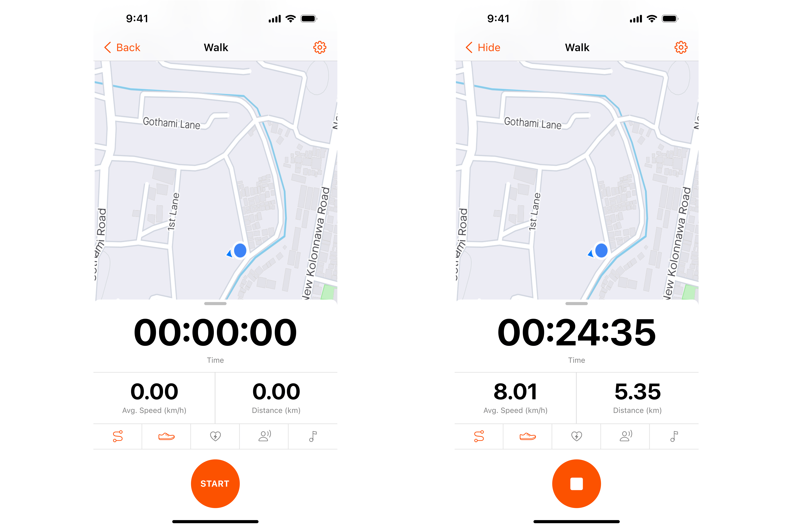
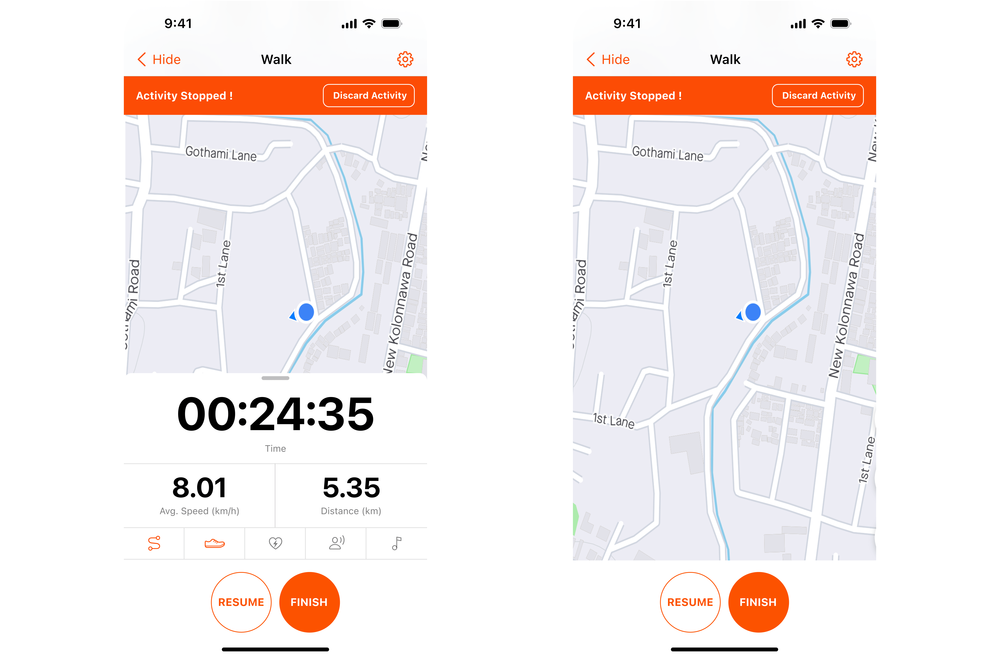

Journey of redesigning Strava, focusing on enhancing usability, accessibility, and overall user satisfaction.
Case study ↓
About Strava
Strava, a popular fitness tracking app, has gathered a large
user base since its inception. It is well known among the
fitness community due to its social media feed for fitness
fanatics and tons of features such as the ability to
automatically pair and record activities with some of the
leading GPS watch brands like Garmin.
The app includes a social platform for friends and family to
connect and see each other’s workouts. It’s also a competitive
motivational network with workout analytics, fitness data,
achievements, and leaderboards. The social media component
creates a community for athletes, from professional and Olympic
runners to cyclists riding for fun. Every activity displays a
map (if applicable) and statistics (duration, pace, calories,
vertical) shown in a feed among followers along with much more
interesting features.
This case study presents the journey of redesigning Strava,
focusing on enhancing usability, accessibility, and overall user
satisfaction.

How things started
My craze for running began, during an usual Friday evening standup call when my manager, with an undying love for cycling, introduced the app, its features and suggested we all download Strava. Eventually I joined CCR & CNR which is a local running club which paved the way for me to interact with a vast community of runners and fitness enthusiasts and thus made me more intrigued about the app and its user experience.

Having some fun during the CCR/CNR 5K Park Run

Trying to play it cool at FITHIT 24’ 5K Run by SLASSCOM
How things went
After being introduced to this app, I have been continuously using it for the past 8 months to track my running activities, build connections with people from the running community, and to get daily inspiration to step out of my comfort zone and go out for a run. Strava’s “freemium” model allows users to use the app for free with limited capabilities or purchase a “premium” subscription with enhanced features for $ 59.99 / year or $7.99/month. Majority of the users primarily use Strava for either running or cycling and it features support for over 41 different sports (as of September 2022).
During this 8 months of usage I happened to notice that Strava like
many other products is not yet up to perfection, and with the
evolving landscape of user expectations and technological
advancements, myself along with a friend of mine who is also a
product designer and fitness freak, set out on this journey to
reassess and redesign the user experience to better cater to the
needs and preferences of its users.
In this case study I will be presenting a few pain-points we
personally faced as users and a few more faced by other users
identified during the research phase of this study. Then I will walk
through on how the pain points can be addressed with a little bit of
redesign to its features and the process of redesigning in detail
along with some closing thoughts.
Sliding into the users shoes
In-depth interviews with a diverse group of Strava users was conducted to understand their experiences, pain points, and expectations from the app. We utilized a combination of open-ended questions and task-based scenarios to gather insights into their usage patterns, challenges, and suggestions for improvement. The insights gathered from these interviews served as the foundation for identifying key pain points and informing the redesign requirements for Strava.
"Strava helps me push my limits, but the cluttered social feed a bit distracting. I wish I could see both my route map and running details simultaneously."
"I'm always looking to fine-tune my tracking settings, but had difficulty navigating to the autopause option and no way of changing activity types mid-run."
"I like using Strava to keep track of my runs, but I wish it was easier to see both the map and running details without switching screens."
"Have been using Strava for 3 years to track my activities, but it's frustrating when I have to end an activity and scroll all the way down to discard an activity.”
"Strava is my go-to app for tracking my workouts, but sometimes the cluttered social feed and difficulty in finding an activity can be frustrating."
Exploring the fitness market
In order to perform a better redesign of Strava, a comprehensive analysis of competing fitness tracking applications was conducted. This analysis aimed to identify strengths, weaknesses, and emerging trends in similar platforms, providing valuable insights for enhancing Strava's user experience.

Visual Identity
The key pain points were identified during the research phase are as follows,
In the ideation phase, a collaborative process was initiated to generate creative solutions addressing identified pain points and user needs. Through brainstorming sessions, concept exploration, and competitive analysis, a wide range of innovative ideas were generated to enhance Strava's user experience.


Solving problems like a pro
Process
Guided by user insights, industry best practices, and data-driven analysis, the redesign phase focused on implementing innovative design solutions to address identified pain points and enhance the overall user experience.
One of the key pain points was the existing social feed in Strava
often feels cluttered and overwhelming, with an abundance of
activity updates, achievements, and challenges.
A few minor twerks were done to enhance the visual presentation of
content with cleaner layouts, intuitive navigation, and vibrant
imagery.
Users face difficulty in viewing both the map of their route and essential running details simultaneously within the Strava app. This limitation hinders the ability to analyze performance metrics while visually tracking progress on the route map during a run or post-activity review.
To address this challenge, the redesign aims to enable users to seamlessly view both the map of their route and running details concurrently on the same screen, enhancing the overall user experience and providing comprehensive insights into their workouts.
Imagine a user who does three different types of sports A,B, & C and to make things even more simple lets say the user does regular runs during the morning, and goes for a cycling session during the weekends and long walks once in a while. Strava keeps the sport performed during the previous activity as the default sport for the next activity as well.
In simple terms our user who went for a long walk during the weekend will have “walk” set as the default sport for his next session on Monday. In our case the user goes for a run on Weekdays and the sport mode can be changed at two points.
The above options come with its own consequences where if the user figures out he is on a wrong sport mode mid-run he either has to stop the run and change the mode which makes him lose track of the activity performed so far or to be patient and change the mode after the run which causes him to basically run with pace analysis suitable for a walk.
A simple feature which enables the user to switch between sport types during an activity as illustrated above would fix this huge frustration that the Strava community faces. Rather than showing a whole list of sports modes (in the default Strava way) showing only the top sports of the user would make the experience less distracting mid-activity.
When attempting to discard an erroneous activity within the Strava app. The current process may be cumbersome or unclear, leading to frustration and inconvenience when trying to remove unwanted activities from their profile.
The current process requires the user to mandatorily Finish the activity first, then scroll to the end of the activity details page and then click the Discard Activity option. This is quite a lengthy and confusing process with the user being required to perform 3 clicks in total plus a whole lot of scrolling (and confusion for new users).
To address this challenge, the redesign aims to streamline the process of discarding activities by integrating the discard option on the Alert that pops up after pausing an activity, providing users with a straightforward and intuitive option to remove unwanted data from their activity history while saving a lot of time, effort and minimizing a great extent of confusion.
The current activities page present on Strava displays the users own activities in the same way as it is on the social feed of Home page. This results in a single activity taking up an entire screen and prompting the user to endlessly scroll to view other activities. This form of layout is cluttered and feels way useless as the user needs to click on the activity to view more details regarding the activity.

To overcome this issue a simple redesign was done by prioritizing only the most needed information and decluttering the information to make the activities page more visually appealing and also to facilitate users to view more activities at one glance.
Conclusion
This exciting journey of redesigning Strava wasn't just about usability, user experience and design; it was a transformative experience and a key turning point in our lives that taught us some of the greatest life lessons.
To waking up on an early Sunday morning to going for late night runs after a tiring day taught us the benefits of stepping out of our comfort zones and the importance of consistency. Just like a good run, designing too requires us to embrace the discomfort and discovere new possibilities beyond our initial boundaries to create seamless user experiences.
Running is often seen as a solitary activity, but Strava showed us the strength that comes from connecting with a like-minded community.The sheer amount of motivations from the great souls from CCR & CNR helped us push boundaries for multiple PB’s. Similarly design isn't a solo journey either – it's about collaboration, feedback, and shared enthusiasm
Just as a marathon isn't won in a sprint, it requires months of hard work and discipline. Likewise design demands persistence, from sketching ideas to overcoming technical hurdles, each setback is a lesson to create something much better.
Running taught us that every step matters, and the same principle applies to design a well. Multiple iterations based on user feedback and evolving ideas. Each tweak, much like a training run, brought us closer to an improved version. The lesson? Progress is a series of small steps.
This redesign wasn't a mere project; it was a passion project fueled by our love for both running and design, and the desire to enhance the running experience for everyone. Passion became the driving force that transformed a routine task into an exciting journey, reminding us that genuine enthusiasm boosts innovation.
Team IFS (My workplace) grabbing awards at FitHit 24’
Sunday morning & Thursday night runs with CCR & CNR